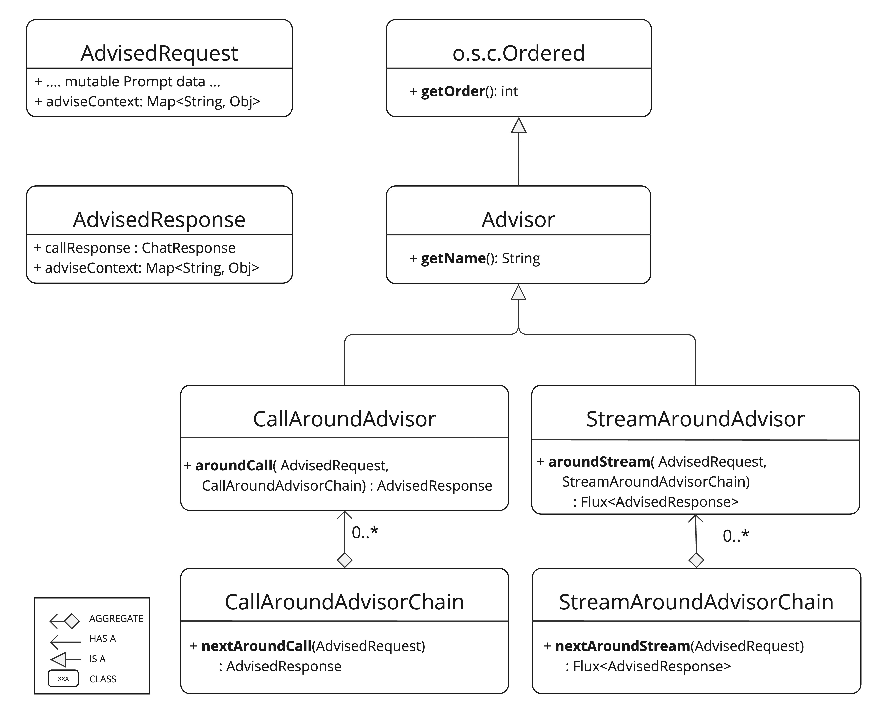
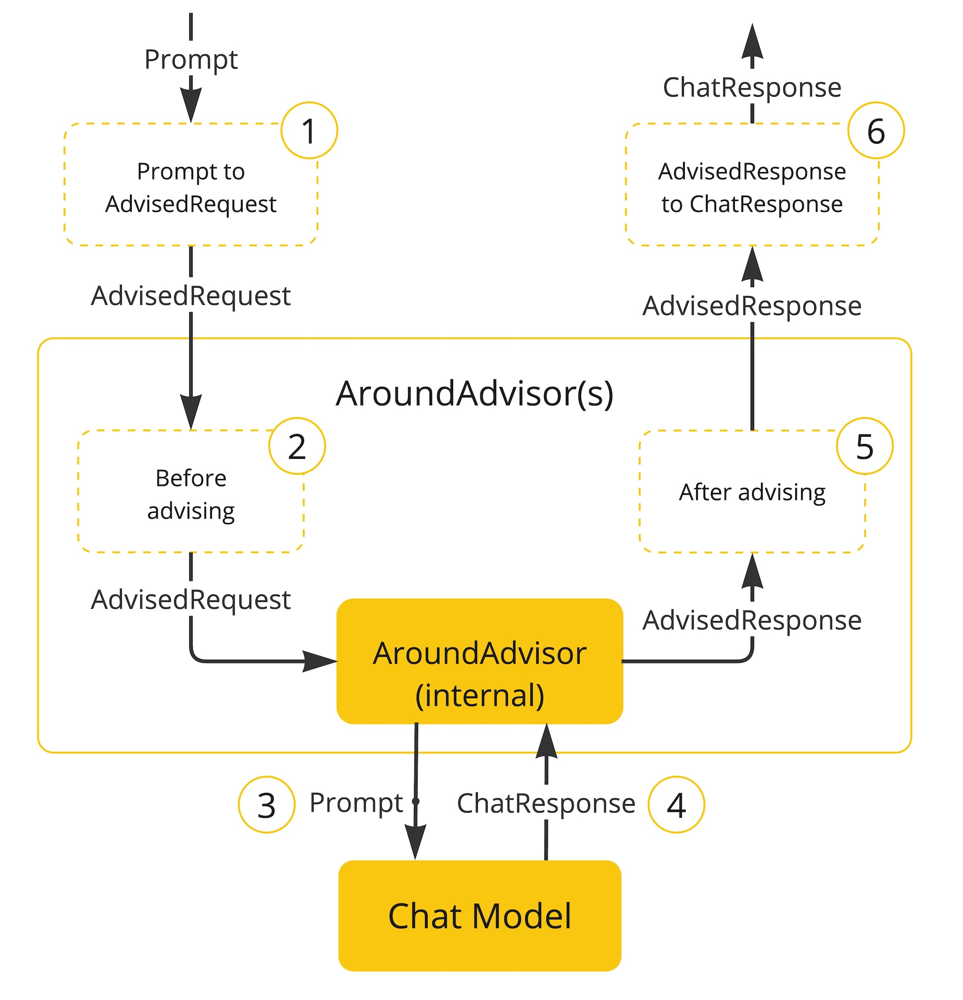
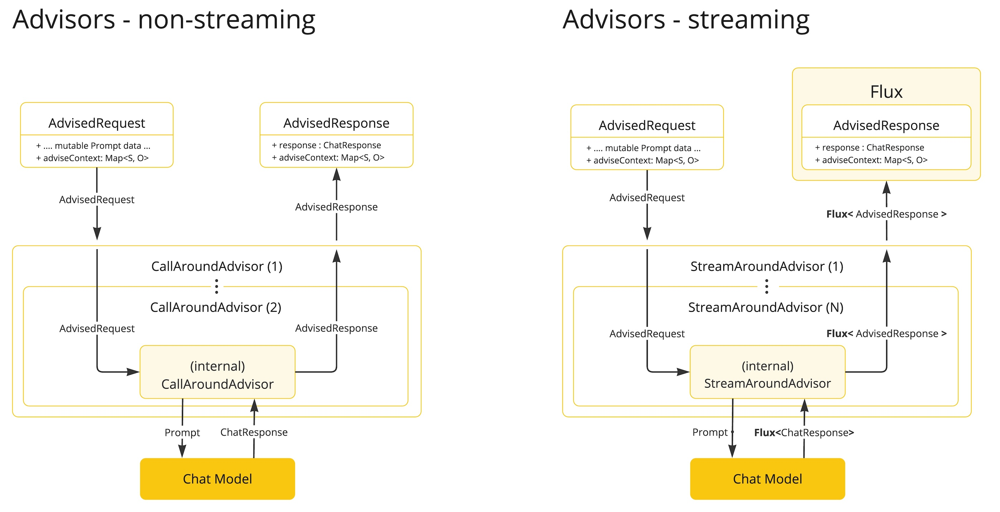

顾问 API #
Spring AI Advisors API 提供了一种灵活而强大的方法来拦截、修改和增强 Spring 应用程序中的 AI 驱动交互。通过利用 Advisors API，开发人员可以创建更复杂、可重用且更易于维护的 AI 组件。
主要优势包括封装重复的生成式 AI 模式、转换发送到和来自大型语言模型 (LLM) 的数据，以及提供跨各种模型和用例的可移植性。
您可以使用 [ ChatClient API](chatclient.html#_advisor_configuration_in_chatclient) 配置现有的顾问，如以下示例所示：
var chatClient = ChatClient.builder(chatModel)
.defaultAdvisors(
MessageChatMemoryAdvisor.builder(chatMemory).build(), // chat-memory advisor
QuestionAnswerAdvisor.builder((vectorStore).builder() // RAG advisor
)
.build();
var conversationId = "678";
String response = this.chatClient.prompt()
// Set advisor parameters at runtime
.advisors(advisor -> advisor.param(ChatMemory.CONVERSATION_ID, conversationId))
.user(userText)
.call()
.content();
建议在构建时使用构建器的 defaultAdvisors() 方法注册顾问。
顾问也参与可观察性堆栈，因此您可以查看与其执行相关的指标和跟踪。
- 了解问答顾问
- 了解聊天记忆顾问
核心组件 #
该 API 包含用于非流式场景的 CallAroundAdvisor 和 CallAroundAdvisorChain ，以及用于流式场景的 StreamAroundAdvisor 和 StreamAroundAdvisorChain 。此外，它还包含用于表示未密封 Prompt 请求的 AdvisedRequest 和用于表示聊天完成响应的 AdvisedResponse 。两者都包含一个 advise-context 用于在顾问链之间共享状态。

nextAroundCall() 和 nextAroundStream() 是关键的顾问方法，通常执行的操作包括检查未密封的提示数据、自定义和扩充提示数据、调用顾问链中的下一个实体、可选地阻止请求、检查聊天完成响应以及抛出异常以指示处理错误。
此外， getOrder() 方法确定链中的顾问顺序，而 getName() 提供唯一的顾问名称。
Spring AI 框架创建的 Advisor Chain 允许按 getOrder() 值的顺序调用多个 Advisor。值较低的 Advisor 优先执行。最后一个 Advisor 会自动添加，并将请求发送到 LLM。
以下流程图说明了顾问链和聊天模型之间的交互：

顾问订单 #
链中 advisor 的执行顺序由 getOrder() 方法决定。需要理解的关键点：
- 具有较低顺序值的顾问将首先执行。
- 顾问链以堆栈的形式运行：
- 链中的第一位顾问是第一个处理请求的。
- 它也是最后处理响应的。
- 链中的第一位顾问是第一个处理请求的。
- 它也是最后处理响应的。
- 控制执行顺序：
- 将顺序设置为接近 Ordered.HIGHEST_PRECEDENCE 以确保顾问在链中首先执行（首先执行请求处理，最后执行响应处理）。
- 将顺序设置为接近 Ordered.LOWEST_PRECEDENCE 以确保顾问在链中最后执行（请求处理最后执行，响应处理首先执行）。
- 将顺序设置为接近 Ordered.HIGHEST_PRECEDENCE 以确保顾问在链中首先执行（首先执行请求处理，最后执行响应处理）。
- 将顺序设置为接近 Ordered.LOWEST_PRECEDENCE 以确保顾问在链中最后执行（请求处理最后执行，响应处理首先执行）。
- 值越高，优先级越低。
- 如果多个顾问具有相同的订单值，则无法保证它们的执行顺序。
提醒一下，以下是 Spring Ordered 接口的语义：
public interface Ordered {
/**
* Constant for the highest precedence value.
* @see java.lang.Integer#MIN_VALUE
*/
int HIGHEST_PRECEDENCE = Integer.MIN_VALUE;
/**
* Constant for the lowest precedence value.
* @see java.lang.Integer#MAX_VALUE
*/
int LOWEST_PRECEDENCE = Integer.MAX_VALUE;
/**
* Get the order value of this object.
* <p>Higher values are interpreted as lower priority. As a consequence,
* the object with the lowest value has the highest priority (somewhat
* analogous to Servlet {@code load-on-startup} values).
* <p>Same order values will result in arbitrary sort positions for the
* affected objects.
* @return the order value
* @see #HIGHEST_PRECEDENCE
* @see #LOWEST_PRECEDENCE
*/
int getOrder();
}
API 概述 #
主要的 Advisor 接口位于包 org.springframework.ai.chat.client.advisor.api 中。以下是您在创建自己的 Advisor 时会遇到的关键接口：
public interface Advisor extends Ordered {
String getName();
}
同步和反应式顾问的两个子接口是
public interface CallAroundAdvisor extends Advisor {
/**
* Around advice that wraps the ChatModel#call(Prompt) method.
* @param advisedRequest the advised request
* @param chain the advisor chain
* @return the response
*/
AdvisedResponse aroundCall(AdvisedRequest advisedRequest, CallAroundAdvisorChain chain);
}
和
public interface StreamAroundAdvisor extends Advisor {
/**
* Around advice that wraps the invocation of the advised request.
* @param advisedRequest the advised request
* @param chain the chain of advisors to execute
* @return the result of the advised request
*/
Flux<AdvisedResponse> aroundStream(AdvisedRequest advisedRequest, StreamAroundAdvisorChain chain);
}
要继续 Advice 链，请在 Advice 实现中使用 CallAroundAdvisorChain 和 StreamAroundAdvisorChain ：
接口是
public interface CallAroundAdvisorChain {
AdvisedResponse nextAroundCall(AdvisedRequest advisedRequest);
}
和
public interface StreamAroundAdvisorChain {
Flux<AdvisedResponse> nextAroundStream(AdvisedRequest advisedRequest);
}
实现顾问 #
要创建 Advisor，请实现 CallAroundAdvisor 或 StreamAroundAdvisor （或两者兼有）。非流式 Advisor 的关键方法是实现 nextAroundCall() ，而流式 Advisor 的关键方法是 nextAroundStream() 。
示例 #
我们将提供一些实际的例子来说明如何实现顾问来观察和扩充用例。
日志顾问 #
我们可以实现一个简单的日志顾问，在调用链中的下一个顾问之前记录 AdvisedRequest ，并在调用之后 AdvisedResponse 。请注意，该顾问仅观察请求和响应，而不会对其进行修改。此实现支持非流式和流式场景。
public class SimpleLoggerAdvisor implements CallAroundAdvisor, StreamAroundAdvisor {
private static final Logger logger = LoggerFactory.getLogger(SimpleLoggerAdvisor.class);
@Override
public String getName() { (1)
return this.getClass().getSimpleName();
}
@Override
public int getOrder() { (2)
return 0;
}
@Override
public AdvisedResponse aroundCall(AdvisedRequest advisedRequest, CallAroundAdvisorChain chain) {
logger.debug("BEFORE: {}", advisedRequest);
AdvisedResponse advisedResponse = chain.nextAroundCall(advisedRequest);
logger.debug("AFTER: {}", advisedResponse);
return advisedResponse;
}
@Override
public Flux<AdvisedResponse> aroundStream(AdvisedRequest advisedRequest, StreamAroundAdvisorChain chain) {
logger.debug("BEFORE: {}", advisedRequest);
Flux<AdvisedResponse> advisedResponses = chain.nextAroundStream(advisedRequest);
return new MessageAggregator().aggregateAdvisedResponse(advisedResponses,
advisedResponse -> logger.debug("AFTER: {}", advisedResponse)); (3)
}
}
重读（Re2）顾问 #
“ [ 重读提升大型语言模型的推理能力]( https://arxiv.org/pdf/2309.06275) ”一文介绍了一种名为重读（Re2）的技术，它可以提升大型语言模型的推理能力。Re2 技术需要像这样扩充输入提示：
实现将 Re2 技术应用于用户输入查询的顾问可以如下完成：
public class ReReadingAdvisor implements CallAroundAdvisor, StreamAroundAdvisor {
private AdvisedRequest before(AdvisedRequest advisedRequest) { (1)
Map<String, Object> advisedUserParams = new HashMap<>(advisedRequest.userParams());
advisedUserParams.put("re2_input_query", advisedRequest.userText());
return AdvisedRequest.from(advisedRequest)
.userText("""
{re2_input_query}
Read the question again: {re2_input_query}
""")
.userParams(advisedUserParams)
.build();
}
@Override
public AdvisedResponse aroundCall(AdvisedRequest advisedRequest, CallAroundAdvisorChain chain) { (2)
return chain.nextAroundCall(this.before(advisedRequest));
}
@Override
public Flux<AdvisedResponse> aroundStream(AdvisedRequest advisedRequest, StreamAroundAdvisorChain chain) { (3)
return chain.nextAroundStream(this.before(advisedRequest));
}
@Override
public int getOrder() { (4)
return 0;
}
@Override
public String getName() { (5)
return this.getClass().getSimpleName();
}
}
Spring AI 内置顾问 #
Spring AI 框架提供了多个内置顾问，以增强您的 AI 交互。以下是可用顾问的概述：
聊天记忆顾问 #
这些顾问在聊天记忆库中管理对话历史记录：
问答顾问 #
内容安全顾问 #
流式传输 vs. 非流式传输 #

- 非流式顾问处理完整的请求和响应。
- 流顾问使用反应式编程概念（例如，用于响应的 Flux）将请求和响应作为连续流进行处理。
@Override
public Flux<AdvisedResponse> aroundStream(AdvisedRequest advisedRequest, StreamAroundAdvisorChain chain) {
return Mono.just(advisedRequest)
.publishOn(Schedulers.boundedElastic())
.map(request -> {
// This can be executed by blocking and non-blocking Threads.
// Advisor before next section
})
.flatMapMany(request -> chain.nextAroundStream(request))
.map(response -> {
// Advisor after next section
});
}
最佳实践 #
向后兼容性 #
重大 API 变更 #
Spring AI Advisor Chain 从 1.0 M2 版本到 1.0 M3 版本发生了较大变化，主要修改如下：
顾问界面 #
- 在 1.0 M2 中，有单独的 RequestAdvisor 和 ResponseAdvisor 接口。
- RequestAdvisor 在 ChatModel.call 和 ChatModel.stream 方法之前被调用。
- 在这些方法之后调用了 ResponseAdvisor 。
- RequestAdvisor 在 ChatModel.call 和 ChatModel.stream 方法之前被调用。
- 在这些方法之后调用了 ResponseAdvisor 。
- 在 1.0 M3 中，这些接口已被替换为：
- StreamResponseMode ，以前是 ResponseAdvisor 的一部分，已被删除。
上下文映射处理 #
- 在 1.0 平方米中：
- 上下文图是一个单独的方法参数。
- 该地图是可变的，并沿着链条传递。
- 上下文图是一个单独的方法参数。
- 该地图是可变的，并沿着链条传递。
- 在 1.0 M3 中：
- 上下文映射现在是 AdvisedRequest 和 AdvisedResponse 记录的一部分。
- 该地图是不可变的。
- 要更新上下文，请使用 updateContext 方法，该方法使用更新的内容创建一个新的不可修改的映射。
- 上下文映射现在是 AdvisedRequest 和 AdvisedResponse 记录的一部分。
- 该地图是不可变的。
- 要更新上下文，请使用 updateContext 方法，该方法使用更新的内容创建一个新的不可修改的映射。
1.0 M3 中更新上下文的示例：
@Override
public AdvisedResponse aroundCall(AdvisedRequest advisedRequest, CallAroundAdvisorChain chain) {
this.advisedRequest = advisedRequest.updateContext(context -> {
context.put("aroundCallBefore" + getName(), "AROUND_CALL_BEFORE " + getName()); // Add multiple key-value pairs
context.put("lastBefore", getName()); // Add a single key-value pair
return context;
});
// Method implementation continues...
}